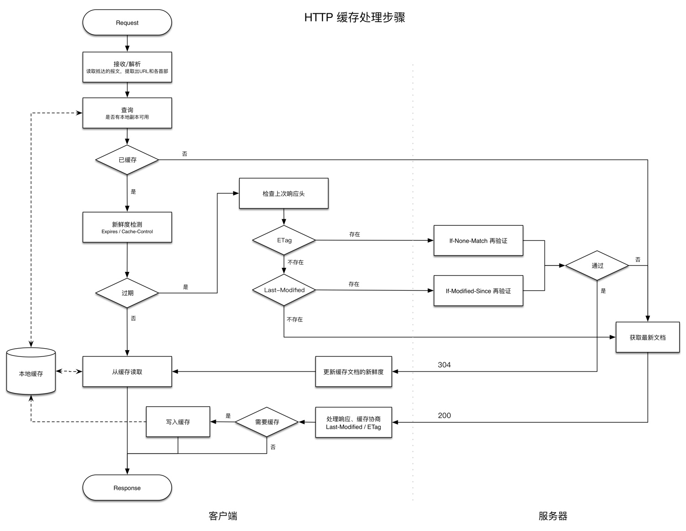

做一下 HTTP 缓存相关知识点的总结。
关于命中的概念如下：
考量命中率主要有两种方式：

相关的 5 个条件首部：
If-Modified-Since ：通过比较过期日期进行再验证。If-None-Match ：通过比较实体标签(ETag)进行再验证。If-Unmodified-Since ：在进行部分文件的传输时，获取文件的其余部分之前用来确保文件未发生变化。If-Range ：支持对不完整文档的缓存。If-Match ：用于与Web服务器打交道时的并发控制。IMS请求：If-Modified-Since 再验证请求。只有自某个日期之后资源发生了变化的时候，IMS请求才会执行：返回新文档给缓存或304，以及新的过期日期。有些Web服务器只是将IMS日期和文档最后修改日期进行字符串比较。
强弱验证器：只要内容发生变化，强验证器就会变化；内容的主要含义发生变化时，弱验证器会变化。服务器会用 W/ 前缀来标识弱验证器。
ETag: W/"v2.6"If-None-Match: W/"v2.6"
如果服务器回送了一个 ETag ，HTTP1.1客户端就必须使用实体标签验证器。如果服务器只回送一个 Last-Modified 值，客户端就可以使用 If-Modified-Since 验证。如果两种方式都提供，客户端应该使用两种再验证方式。
s-maxage 表示仅适用于公有缓存。服务器可以将最大使用期设置为 0 ，从而在每次访问时都刷新。附表： Cache-Control
| 指令 | 目的 |
|---|---|
| Cache-Control: max-stale | 缓存可以随意提供过期文件(放松缓存规则) |
| Cache-Control: max-stale=s | 在时间 s 秒内，文档不能过期 |
| Cache-Control: min-fresh=s | 至少在未来 s 秒内文档要保持新鲜(严格规则) |
| Cache-Control: max-age=s | 缓存无法返回缓存时间长于 s 秒的文档(严格规则) |
| Cache-Control: no-cache | 除非资源进行了再验证，否则客户端不接受已缓存的资源 |
| Pragma: no-cache | HTTP/1.0+ 同上 |
| Cache-Control: no-store | 缓存应该尽快从存储器中删除文档的所有痕迹 |
| Cache-Control: only-if-cached | 只有当缓存中有副本存在时，客户端才会获取一份副本 |
主要参考资料：《HTTP权威指南》